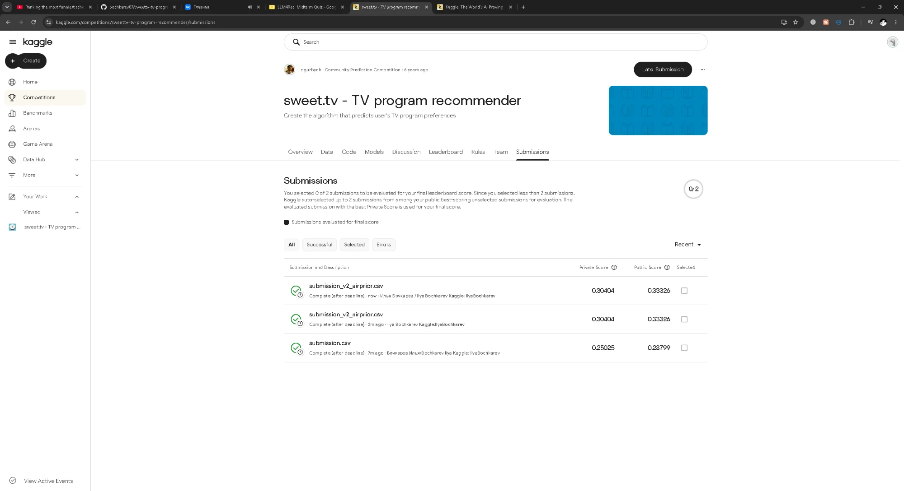
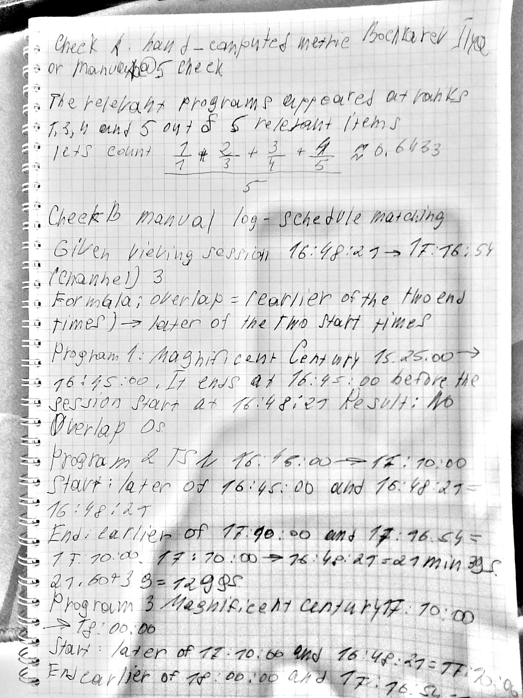
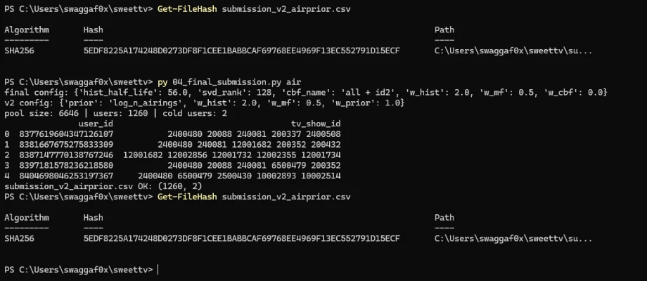
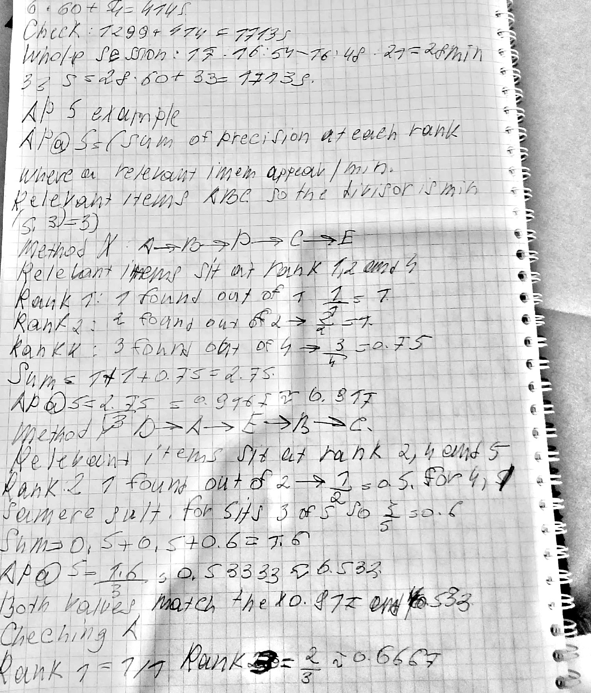
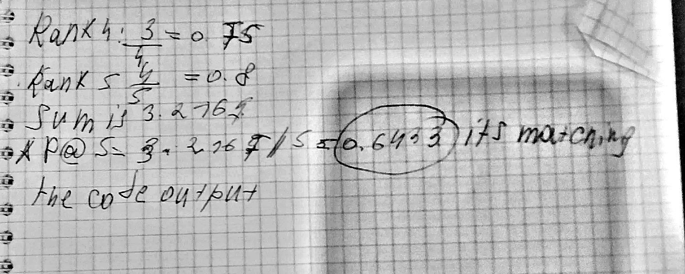

Problem. Given SWEET.TV viewing sessions (user, channel, start, stop; 9 Mar–26 Jul 2020) and channel schedules with program metadata, output an ordered Top-5 of tv_show_id for every test user; quality is MAP@5 against the programs the user preferred in weeks 31–42 [5].
Motivation. Live TV has a fixed catalogue of recurring programs, so a recommender must decide between “your usual shows” and discovery, and must know what will actually be on air.
Example. For a typical validation user (234 programs watched) the final model returns news and talk shows the user watched most (e.g. 240081 “Факты. День.”, 6500479 “Мир наизнанку”) and hits {{HITS_TYP_H2}} of 5 target programs (AP@5 {{AP_TYP_H2}}; the v1 hybrid hits {{HITS_TYP_H1}}, AP@5 {{AP_TYP_H1}}; Table 3).
Contributions.
Prior work consulted (what I took from it, in my own words).
MAP@K follows the course definition with the min(K,|Ru|) normalisation [6]. Alternatives considered: association rules — not implemented, because with few co-watched pairs per user they were expected to add little over popularity and time was limited; personalized PageRank — not implemented for the same reason (it remains a natural extension); BPR/two-tower models — out of scope for the available time.
Approach. We (1) build user–program interactions by joining logs to the schedule, (2) split by time, (3) score every program that is on air in the target window with each method, (4) blend z-scored method scores with weights chosen on a held-out half of the users, and (5) retrain on all logs and predict weeks 31–42.
Matching rule and missing IDs. A session [start, stop] on channel c is matched to every airing on the same channel whose interval [start, start+duration) overlaps it; a (session, program) pair is kept if the overlap is ≥60 s (threshold chosen a priori, not tuned). Per (user, program) we sum overlap seconds and use w=log(1+minutes). Schedule rows with tv_show_id=0 (irrelevant programs, 88–89% of rows) never become interactions; schedule files overlap at week boundaries and are de-duplicated on (channel, start). Result: 5,821,987 sessions → 3,742,237 interactions, 4,895 users, 4,362 programs; 53.0% of watch time is matched to relevant programs; the rest falls on programs with tv_show_id=0, on the 114 of 202 logged channels that have no relevant program in the schedule (5 channels are absent from it altogether), or on overlaps shorter than 60 s. Log and schedule clocks were assumed equal: shifts of −3…+3 h were tried and zero shift gave the largest share of session starts within 90 s after a program start in both March and July (3.1%/3.0% vs 2.5–2.8%) — a weak but consistent signal.
Protocol. Train: sessions before 1 June 2020; validation: 1 June–26 July (8 weeks). Candidate pool: programs with an airing in the validation window (5,732; the test pool is the 31–42 schedule, 6,646 programs). Ground truth per user: the 5 programs with the largest validation watch time (the competition asks for the 5 “most preferred”). Evaluation users: the 1,244 of the 1,260 submission users with validation activity (7 have no training history and get popularity). Hyper-parameters and blend weights are chosen on a random half A of users and reported on the held-out half B and on all users (seed 42). No validation or future sessions are used for training; program metadata and future schedules are provided inputs.
Key design decisions. (1) Overlap-based matching with a 60 s minimum, because sessions often span two programs (Check B) and partial viewing should count in proportion to its length. (2) Already-watched programs are not excluded: 67.4% of validation targets are repeats, and excluding them drops every method below 0.01. (3) Z-scored blend with weights chosen on user-half A, so that scores of different scales can be combined and the reported number comes from users not used for tuning.
Methods. Popularity: number of distinct training users. Own-history prior (reference, not one of the two required methods): decayed watch time (half-life 56 d), log-scaled. CBF: TF-IDF blocks for category, genres, actors, director, title words and decade (weights 1/1/0.5/0.5/0.5/0.3); user profile = watch-weighted sum of program vectors, cosine ranking. MF: implicit ALS [1] (confidence 1+αw) and PureSVD [2] of the user–program matrix of w. Hybrid: Σ wk·z(Sk) with per-user z-scores over the pool; v2 adds the airing prior z(log(1+#airings of the program in the target window)), known in advance from the schedule.
Tools: Python 3.14.5, pandas 3.0.6, NumPy 2.5.3, SciPy 1.18.1 (svds), scikit-learn 1.9.1 (TfidfVectorizer); ALS is our own implementation (no implicit package). CPU only, one Windows 11 PC. Seeds: ALS init 0, user split 42.
Setup. SWEET.TV competition data [5]; protocol above; MAP@5 with normalisation min(5,|Ru|) [6]. Of the validation targets, 67.4% were already watched by the user in training and 12.3% were never seen in training by anyone (cold programs).
| Method | Configuration | MAP@5 (B, held-out) | MAP@5 (all) | HR@5 | P@5 | fit, s | rank 1,244 users, s |
|---|
Comparison with baseline. The two required methods behave very differently: PureSVD ({{SVD_ALL}}) is far above popularity ({{POP_ALL}}), ALS ({{ALS_ALL}}) is below it, and CBF ({{CBF_ALL}}) is almost zero. Own history alone ({{HIST_ALL}}) already beats every single required method; the hybrid v1 reaches {{H1_ALL}} and v2 {{H2_ALL}} (held-out half B: {{H1_B}} → {{H2_B}}; without the prior at the same weights {{H2BASE_B}}). Recommending only unseen programs removes the signal: popularity {{EXPOP}}, history {{EXHIST}}, SVD {{EXSVD}} (MAP@5, all users).
| Check | without airing prior | with airing prior |
|---|---|---|
| 8-week validation (1 Jun–26 Jul), B / all | {{H2BASE_B}} / {{H2BASE_ALL}} | {{H2_B}} / {{H2_ALL}} |
| 12-week validation (4 May–26 Jul, same horizon as test), B / all | {{H12_0_B}} / {{H12_0_ALL}} | {{H12_2_B}} / {{H12_2_ALL}} |
| Kaggle (weeks 31–42): private / public | 0.25025 / 0.28799 (v1) | 0.30404 / 0.33326 (v2, final) |

submission.csv scored 0.25025 private / 0.28799 public; the final designated submission submission_v2_airprior.csv (uploaded twice; the top entry carries the Russian name in its description) scored 0.30404 private / 0.33326 public. The final file is in the repository.Verification. (a) the apk code reproduces the worked example of the course slides [6] (0.917 and 0.533; unit_checks_output.txt); (b) 09_unit_checks.py asserts that training sessions end before the cutoff, validation sessions start after it, and targets lie inside the candidate pool; (c) CBF sanity check 08_cbf_sanity.py: raising the show-identity weight to 100 lifts CBF to 0.279, almost the own-history level (0.284), so the CBF pipeline is correct and its weakness is a property of the metadata; (d) both submission files are checked against the template (1,260 users, 5 distinct programs each, all inside the weeks 31–42 schedule); outputs of all checks are committed (unit_checks_output.txt, cbf_sanity_output.txt). (e) Manual checks by the student (Figure 2): Check A — for user A (Hybrid v1, validation) the relevant programs are at ranks 1, 3, 4, 5 of 5 relevant, AP@5 = (1/1+2/3+3/4+4/5)/5 = 0.6433, equal to the code output; Check B — for one raw session (channel 3, 2020-04-10 16:48:21–17:16:54) the overlaps with the scheduled programs were computed by hand: 0 s (15:25–16:45), 1299 s (“ТСН”, 17:10:00−16:48:21) and 414 s (“Великолепный век”, 17:16:54−17:10:00); they equal the values stored by the pipeline, and 1299+414 = 1713 s equals the session length (28 min 33 s); Check C — the worked example of slide 5 [6] computed by hand: method X (relevant programs at ranks 1, 2, 4) gives (1+1+0.75)/3 = 0.917 and method Y (ranks 2, 4, 5) gives (0.5+0.5+0.6)/3 = 0.533, equal to the slide and to the code (Figure 3); (f) Re-run from scratch — running 04_final_submission.py air again regenerated submission_v2_airprior.csv with the identical SHA-256 (5EDF8225A174248D…91D15ECF) before and after the run; (g) Formula check — the AI proposed a line-by-line mapping of _solve_side to the user-vector solution of [1] (Eq. (4)), and the student checked it against the paper: xu = (YTCuY + λI)−1 YTCup(u): the code builds A = YTY + λI + YT(Cu−I)Y (since YTCuY = YTY + YT(Cu−I)Y) and the right-hand side YiT(1 + cui−1) over observed items only, which equals YTCup(u) because pui = 1 for observed pairs and 0 otherwise; (h) Second re-run — the student re-ran 08_cbf_sanity.py and compared the new output with the saved cbf_sanity_output.txt: for all five identity weights (0, 2, 5, 20, 100) MAP@5 (A, B, all) and HR@5 are identical in both runs (e.g. weight 100: 0.2755 / 0.2827 / 0.2791, HR@5 0.814).
 |  |
Get-FileHash before and after py 04_final_submission.py air; the SHA-256 of submission_v2_airprior.csv is identical. |  |
Selected strategy for SWEET.TV: hybrid v2 — decayed own-history score + SVD collaborative signal + airing prior, with CBF kept out of the final blend (weight 0 was selected on half A). Why (validation): {{H2_ALL}} MAP@5 vs {{POP_ALL}} for popularity and {{SVD_ALL}} for the best required method; the gain of the airing prior is {{H2BASE_B}} → {{H2_B}} on B at 8 weeks and {{H12_0_B}} → {{H12_2_B}} at the 12-week horizon of the test. Why (cost): SVD fits in {{SVD_FIT}} s and ALS in {{ALS_FIT}} s on the 4.9k×9.7k matrix, and ranking 1,244 users takes well under a second per method (Table 1), so the model can be retrained after every schedule update; CBF needs item-attribute preprocessing but is cheap too. Why (examples): Table 3.
Users. We took the user closest to the median activity ({{N_MED}} distinct programs in training) as the typical case and the user closest to the 10th percentile ({{N_P10}} programs) as the light case; the rule is applied before looking at any recommendations, and the same two users are shown for every method.
{{CASE_HTML}}How and why the methods differ. Popularity gives everyone the same national news/talk programs; it is right only when the user happens to watch them. CBF returns programs that are close to the profile in metadata (for both users all five are films, “Фильмы”), which gives novelty but zero hits: a profile averaged over 100–250 programs is dominated by broad categories, and the profile–item cosine of a generic film (0.455) exceeds that of the programs actually watched next (0.14–0.42) for one diagnosed validation user with 146 programs in history (cbf_sanity_output.txt). SVD reconstructs the user’s own weighted history plus co-watched programs and so returns the habitual programs; ALS, tuned with a small confidence α and strong regularisation, smooths more towards globally popular programs (a likely, untested explanation of its lower score). The final hybrid ranks habitual programs first and uses the airing prior to prefer programs that are broadcast often. Implication for UX: the list is a precise “continue your usual shows” shelf with low novelty; a discovery shelf needs a separate objective because excluding already-watched programs drops every method below 0.01.
Limitations and failure cases (supported by results). (1) Personalisation vs exposure is a trade-off per user: for light user B the v1 hybrid scores AP@5 {{AP_LIGHT_H1}} (SVD {{AP_LIGHT_SVD}}) because it repeats training programs (“МастерШеф”, “Холостяк”) that are not in the validation top-5, and two of B’s five targets are films B had not watched before; the airing prior lifts v2 to {{AP_LIGHT_H2}}, but for typical user A it lowers AP@5 from {{AP_TYP_H1}} to {{AP_TYP_H2}}. History cannot predict new programs at all, and they are 12.3% of all targets. (2) CBF fails on generic metadata (Table 1). (3) 47% of watch time is not matched to a relevant program (id 0, channels without relevant IDs, short overlaps). (4) Targets are our own definition of “most preferred” (top-5 by watch time); the private Kaggle score of v1 (0.250) is below its validation value (0.288), while v2 gains much more on Kaggle (+0.054) than on validation (+0.009 at 8 weeks, +0.015 at 12 weeks), which we cannot fully explain. (5) One random user split, no confidence intervals; ALS/SVD hyper-parameter grids are small and the best SVD rank (128, the largest tried) and ALS alpha (0.5, the smallest tried) lie at the grid edge.
Failure. CBF scored MAP@5 0.002, against 0.167 for popularity. Root cause. CBF works correctly, but its metadata are too coarse to single out a specific program. Category and genre are shared by hundreds of programs, so the user profile is blurred: the genre “Фильмы” is summed many times and gets a large weight, while the feature “this exact program” is one of hundreds and individually small. In the diagnosed example (a user with 146 programs in the history) the CBF top-5 scored 0.453–0.457, while the user’s target programs (those watched in validation) scored 0.14–0.42. Four of the five recommendations were films from the user’s own history: films from the profile outranked the target programs, apparently because the category “Фильмы” dominates the profile. This is one user, and I do not claim it always happens.
Fix and verification. In an experiment with a show-identity weight of 100 (suggested and run by the AI; I checked the results in cbf_sanity_output.txt) identity outweighed genre and MAP@5 rose from 0.002 to 0.279, almost the level of the own-history model (0.284). This confirms that the CBF pipeline works. But closeness to 0.284 does not mean that CBF is good: at that weight it essentially became the own-history model.
Why it matters. 67.4% of the targets are programs the user had already watched. The task is determined by repeat viewing of specific programs, and coarse metadata cannot distinguish them. This does not mean metadata are useless: the remaining 32.6% of targets had not been watched by the user before (for 12.3% of all targets, nobody had watched them in training), and metadata could help there, but I did not test this separately. This is the next improvement.
09_unit_checks.py).Possible reasons for the gap (who proposed what). After the Kaggle score came back, the AI suggested that the test horizon (12 weeks) is longer than my 8-week validation horizon and proposed (and ran) a re-evaluation at 12 weeks, 4 May–26 Jul (Table 2): the gain of the airing prior grew from +0.009 to +0.015 (0.3218 → 0.3369 on half B), which is more than at 8 weeks but still far below +0.054. So the horizon explains only part of the gap. I added a second idea myself, which I have not tested: the test weeks 31–42 fall in August–October, so the broadcast grid and the share of repeat viewing may differ from March–July. Another open possibility is a different ground-truth definition (top-5 by watch time in my validation versus “most preferred” in the competition). I did not formulate these hypotheses before the check was run; the gap remains unexplained.
I would add confidence intervals: repeat the evaluation on several random splits of the users. At the moment I have a single random split and many differences are small (for example hybrid vs history: 0.2949 vs 0.2897 on B). Without intervals I cannot say which differences are real and which are noise. This would show which differences are real and whether the +0.009 validation effect of the airing feature lies within the noise.
04_final_submission.py air and confirmed an identical SHA-256 of the submission file, and re-ran 08_cbf_sanity.py and confirmed identical MAP@5 and HR@5 for all five identity weights; (5) read experiments_output.txt and cbf_sanity_output.txt for the numbers quoted in §5.2–5.4; (6) uploaded the files to Kaggle myself and took the screenshot; (7) read the relevant parts of [1], [2] (including the PureSVD section), [3] and [4] and summarised them in §2; (8) compared the ALS update step _solve_side in models.py with the formula for the user vector in [1] and found them identical (see §4, check (g)); (9) checked the hyper-parameter grids in 03_experiments.py against results_validation.csv: the best SVD rank (128) is the largest rank tried and the best ALS alpha (0.5) is the smallest tried, so better values outside the grids are possible and I did not extend them._solve_side was compared with the formula of [1]) and trusted the AI that the implementations of PureSVD, TF-IDF and the airing prior do what they should (only their outputs were checked, see above); I read only the parts of the papers that are relevant to the project, not the papers in full.bochkarev_ilya_midterm_session.json is the original, unmodified Claude Code log of this session. Its native format is JSON Lines (one JSON object per line); only the file extension is .json, as the LMS accepts only .json and .pdf. It contains every prompt, tool call and file change.[1] Y. Hu, Y. Koren, and C. Volinsky, “Collaborative filtering for implicit feedback datasets,” in Proc. 2008 Eighth IEEE Int. Conf. Data Mining, 2008, pp. 263–272, doi: 10.1109/ICDM.2008.22. [Accessed: 2026-10-25].
[2] P. Cremonesi, Y. Koren, and R. Turrin, “Performance of recommender algorithms on top-N recommendation tasks,” in Proc. Fourth ACM Conf. Recommender Systems (RecSys '10), 2010, pp. 39–46, doi: 10.1145/1864708.1864721. [Accessed: 2026-10-25].
[3] Y. Koren, R. Bell, and C. Volinsky, “Matrix factorization techniques for recommender systems,” Computer, vol. 42, no. 8, pp. 30–37, 2009, doi: 10.1109/MC.2009.263. [Accessed: 2026-10-25].
[4] P. Lops, M. de Gemmis, and G. Semeraro, “Content-based recommender systems: State of the art and trends,” in Recommender Systems Handbook, Springer, 2010, pp. 73–105, doi: 10.1007/978-0-387-85820-3_3. [Accessed: 2026-10-25].
[5] “sweet.tv – TV program recommender,” Kaggle community prediction competition. [Online]. Available: https://www.kaggle.com/competitions/sweettv-tv-program-recommender. [Accessed: 2026-10-25].
[6] S. Jin, “LLM4Rec – Midterm Quiz,” course slides (MAP@K, slides 4–5), HSE University, 2026.